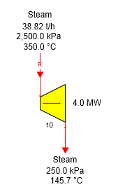
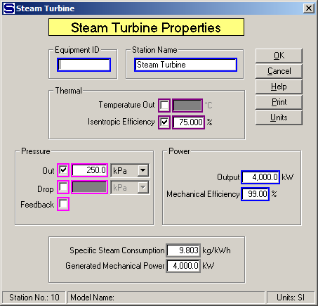
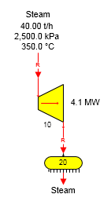

The figure below shows a steam turbine producing 4.0 megawatts of power using 25 bar steam at 350°C temperature (126.1°C of superheat).

The input steam flow is a required flow because the power to be produced is specified on the Steam Turbine Properties windows (see below). The input flow will not be required if the Power Output entry is made 0.0 (no entry) and the exhaust steam out is not required. A known quantity of steam can be entered in this case and Sugars will calculate the power and display it in the "Generated Mechanical Power" field.

If the output steam flow is required and an entry is made for the Power Output, Sugars will give an error message that there is a conflict in the model and either the Power Output entry must be set to 0.0 or the station causing the steam output to be required must be changed to remove the required flow constraint. For example, see the figure below where both the input and output steam flows to the turbine are required flows.

The Steam Turbine Properties window is shown below. As shown, the Power Output entry is 0.0 and the Generated Mechanical Power is calculated and display by Sugars. The input flow to the distributor 20 is required because 40.00 t/h of steam flow is specified to leave the distributor. This makes the output flow from the turbine a required flow; and hence, the input flow is required.